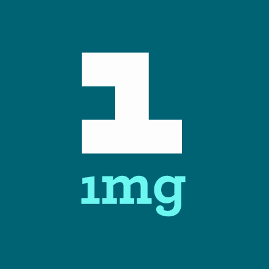

The main objective is to build generic Medicine Recommender System for Doctors/patients which basically maps and recommends Generic Medicines having the same constituents as that of branded medicine prescribed by the doctor.Along with this it also builds awareness about Side effects,Dosage and cost of the medicines.
This also has a Socio- economic impact on society in general by bringing transparency to the patient and also increase the awareness about the medicines. when the name of Brand Medicine is either scanned or searched manually which is useful to doctors and patients. To build awareness about the Dosage,Side effects and cost of the Medicines which is useful to General public.
About
March 2017
Motivation
On 17th April 2017, Prie Minister Narendra Modi hints at rules for doctors to prescribe Generic Medicines. As Name of generic medicines having the same constituents as that of brand medicine is not known to all the doctors and patients, a recommender system is necessary. So Online Generic Medicine Recmmender should be Built.
April 2017
An Agency is Born
Jan Aushadi powered by National Infomatrics Center which has list of all generic drugs.As it is Started recently it has very less number of medicines and Recommendation system is also not there.
December 2017
Transition to Full Service
Generic Medico a website which helps users to find generic medicines having the same constituents as that of brand Medicines giving the dosage,indegrients,price ,seide effects,etc. It is a Free Service Website
Our Team
Our Team members are Dr. Nupur Giri, Satish Fulwani, Rahul Nagdev, Nisha Megnani, Meenu Bhatia. We have done this project as our Final Year Project.
Here you can search Generic Medicines having the same constituents as of Brand Medicine.Doctors,Patients and General public all can easily search the required information .
Here You can get information about the medicine from a doctor who is a registered user. Users can chat easily with doctors on our website about the medicines required
References
1 mg
1mg is an android application which has a list of generic medicines.But this system does not have any recommender system.The System only lists the names of the generic medicines.1 mg is an e-commerce health care company based in Gurgaon, Haryana, India. The company was founded in 2012 as HealthkartPlus, a subsidiary of HealthKart, by Prashant Tandon, Sameer Maheshwari, Gaurav Agarwal and Vikas Chauhan.In April 2015, HealthkartPlus spun off into a separate entity and rebranded itself as 1 mg.
>
MedClik
MedCLIK is India's first and #1 solution developed exclusively for Doctors, Hospitals and Pharmacies.Provides user friendly instant access to accurate, authoritative, updated, reliable drug information. Features: - search drug content by Generic or Brand names, or by Index, Drug Groups and Diseases, .. It is quality-controlled sites that provide free information on essential topics. These resources are widely used by health-care professionals but in most cases are freely accessible to the general public. To access any of these websites, go to the dictionary's web page at http://www.oup.comluk/reference/resources/med
Jan Aushadi
Over the years India, has developed a strong capability in producing quality branded and generic medicines in most of the therapeutic categories, evolving from an mere Rs 1,500 crores industry in 1980 to a more than Rs 1,19,000 crores industry in 2012. However, although these medicines are reasonably priced, as compared to the prices of their equivalent medicines in most other countries, yet a large population of poor people in the country, find it difficult to afford the more expensive branded category of medicines. Accordingly, 'ensuring availability of quality medicines at affordable prices to all', has been a key objective of the Government.
MIMS
MIMS provides a Clinical Decision Support Knowledge bases to help healthcare professionals in electronic prescribing and dispensing environment make better informed prescribing & therapeutic decisions.
MIMS provides a comprehensive knowledge base of locally approved drug information powered with internationally referenced clinical decision support tools. Itâs embedded in the clinical application system, supplying up to date drug information and interacting intelligently with the patientâs profile to maximize healthcare professionalsâ time.


.jpg)